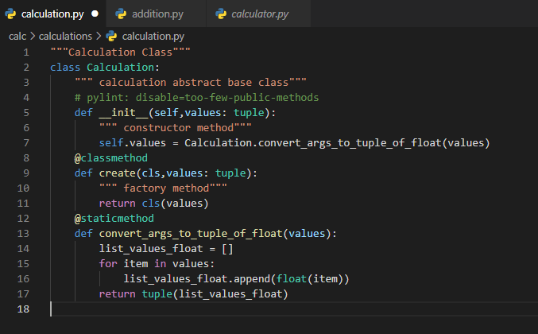
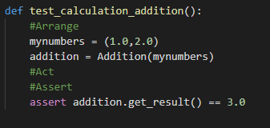
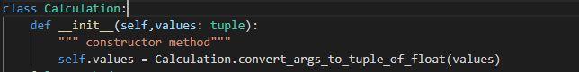
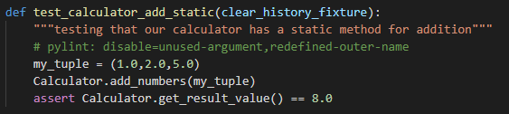
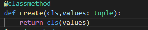

Glossary
Pylint is used to check for bugs and quality for the Python Programming Language.
Hints: Most likely you will always recieve some type of error which is why we are using pylint in the first place.
One of the most important skills when it comes to using pylint is reading errors and finding how to fix them.
Most of the times the errors are very specific so it will tell you what exactly you did wrong such as missing docstring or newline. Pay attention to what the programming is telling you and over time you will know what is needed in every page.
1. Factory is function or method that returns objects or multiple types, which is assumed to be new. An example would be how we created a factory method CLS for the calculator which would instantiate addition, subtraction, multiplication, and division.


Creates an addition and adds object to history using factory method "create"
2. Instantiation is when we create object of a defined class. In language like java when we use the "new" keyword it creates an instance of a specific class (object).

Here addition would be an instance of Addition()
3. Object is an instance of a class. In calculator project we had addition objects (as shown in the previous image), subtraction objects, and much more.
4. Class is a blueprint for a object. For instance, a class can be about an animal and with it you can describe different animals as objects.
5. Namespace refers to a collection of names. When a reference is made inside a function, the name is searched in the local namespace, then in the global namespace and finally in the built-in namespace.
The namespace allows to see accessability or scope of a variable or method.
6. Constructor is a special method used to initilize objects. Often is used to set initial values for objects.

Note: In the previous image we passed Addition(mynumbers) where mynumbers is being used as the initial vlaues to be added which gets converted by the constructor.
7.Fixure is a function that will run each time you pass it to a test. In the calculator clear_history is a ficture because it is being used repeatedly to test functions.

Note: You have to add the fixture function as a parameter to the test that you want to use it with.
8. Type hint specifies expected parameter type. For instance, in our previous image the constructor def __init__(self,values: tuple): was expecting argument type tuple.
9. Type cast is when we convert the data type of an object to required data type. For example, in this line of code list_values_float.append(float(item)) from our calculator item which is originally recieved from type tuple is being converted to a float to make sure we do not recieve random data types.
10. Unit test is the method of testing individual components of programs to make sure everything does exactly what it is suppose to do.

Note: AAA-Testing is a great way to structure test cases. Consists of 3 stages Arrange -> Act -> Assert
11. Static functions can provide functionality related to an a particular class without requiring the us to first create an instance (object) of that class.
Enter calc image Here
12. Class method is a method which is bounded to the class itself rather than an instance of the class. Typically useful when we need to access the class itself. For example, when we want to create a factory method, that is a method that creates instances of the class. In other words, classmethods can serve as alternative constructors.

Note: The first argument is the class (cls).
14. Facade pattern purpose is to hide a lot of complexity in systems.
Source: https://automationpanda.com/2020/07/07/arrange-act-assert-a-pattern-for-writing-good-tests/